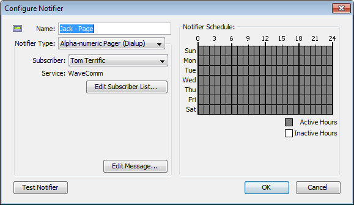
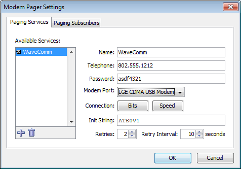
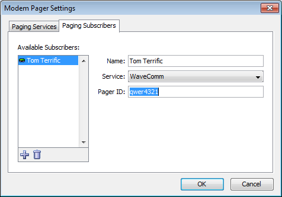

Configuring a Pager Notifier to use an Analogue Modem
InterMapper
uses TAP, the Telelocator Alphanumeric Protocol, with an
internal or external analogue modem to connect to a page service, and to deliver
a notification.
To use the built-in support for paging via analogue modems:
- Create a new notifier.
- From the Notifier Type dropdown menu, select Alpha-numeric
Pager (Dial-up). The example below
shows the Configure Notifier window with the Alpha-numeric Pager (Dial-up)
type.
- From the Subscriber dropdown menu, choose a subscriber, or choose Edit List... to
add or edit paging services or subscribers.
- Click Edit Message... to edit the message that is sent to
the pager. (See warning below)
- In the Notifier Schedule panel, choose the hours during
which the page will be sent.
- When finished, click OK.

A notification that uses the built-in modem paging facilities.
The page will be sent to the person specified by the Subscriber menu.
Warning:
Many paging services limit the length of a message. Sending
a longer message can cause multiple pages per event, and can considerably
increase your pager bill.
Setting up Paging Services and Subscribers
Before you can use the paging options, you need to:
- Set up one or more paging services.
-
Set up one or more subscribers for that service.
The window above assumes that you have already configured InterMapper for your
pager service.

Entering information about a service
To add or edit paging services:
- Choose Edit List... from the Subscriber drop-down
menu. The Paging Settings window appears.
- Click the Paging Services tab. A list of paging services
appears, if any are defined.
- Click a service to edit, or click Add. The information for
the paging service appears.
-
Enter dialup information in the boxes provided. Use the information about
your paging service to enter the service name, telephone number, and password,
the port to which your modem is attached, and the modem configuration.
- In the Bits dropdown menu, choose values appropriate to your
modem. Open the menu repeatedly to set the data bits, stop bits, and parity.
By default, the values are set to 7 data bits, 1 stop bit, and Even parity.
- In the Retries box, set the number of times you would like the page to be sent if it fails. The default is 2.
- In the Retry Interval box,
set the number of seconds to wait between retries. The default is 10 seconds.
- When finished, click Done.

Entering information about a subscriber
To add or edit paging subscribers:
- Choose Edit List... from the Subscriber drop-down
menu. The Paging Settings window appears.
- Click the Paging Subscribers tab. A list of paging subscribers
appears, if any are defined.
- Click a service to edit, or click Add. The information for
the paging service appears.
- In the Name box, enter the name of the person you want to
receive the page.
- From the Service dropdown menu, choose the user's Paging Service.
If the user's paging service doesn't appear, you need to create it as described
above.
- In the Pager ID box, enter the person's pager ID. (This
may be different from the Service phone number that you entered when creating
the user's Paging Service definition above.)
- When finished, click Done.
Paging Log File
The paging log file is a special file which will receive logging of all paging
traffic and messages, including the details of the modem commands and text written
and read. The information in this log may help you or InterMapper Technical Support
to troubleshoot paging if it is not working correctly.
To start logging this traffic, use the Log Files server settings panel to create
a log file named Paging (The log file name will be "Paging<date>.txt")
Logging will continue until the log file is removed through the Log Files panel.
Modem Compatibility
With Mac OSX
InterMapper has been tested with Mac OSX using various built-in modems, an
external USB modem (MultiTech MT5634ZBA-USB), and an older external modem connected
via a KeySpan Twin Serial adapter (using KeySpan's current OSX driver) on a
beige G3. With the KeySpan serial adapter, InterMapper lists both serial ports
in the Modem Page Settings dialog and you are responsible for choosing the correct
one.
With Windows and Unix
A number of modems have been tested with InterMapper. While we cannot guarantee
that a particular modem works, we believe that most modems that support V.34
or a later specification will work well.